Cruise — "The Look" before/after
Matched stills: same build route position, Night, parked, headless Edge, 1280×720 desktop and 390×844 touch emulation (emulation is not a physical phone). "Before" is the frozen prototype on :3097 (a51b5cb). "After" is experiment/cruise-look-20261021 on :3067. The new Night chase camera does not exist in the before build, so its comparison is against the old Coastal (chase) view.
Reference (retrovideonet.mp4, frames from Edge decode)
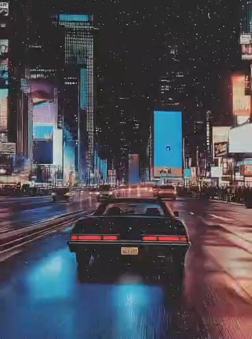
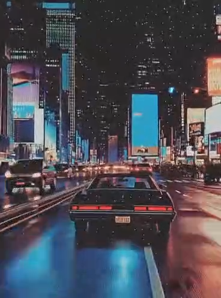
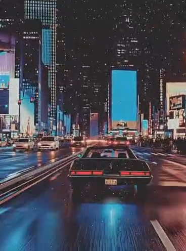
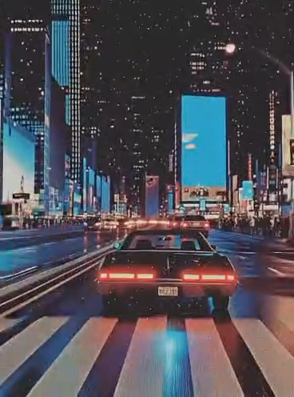
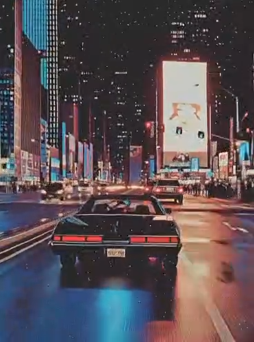
Moving capture (real-time browser render, 16 s, no audio in file)
Desktop — 2nd Street (1,460 m)
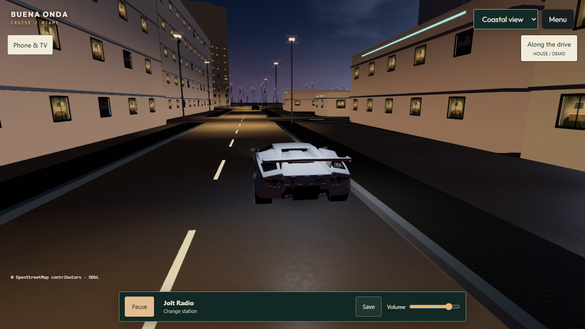
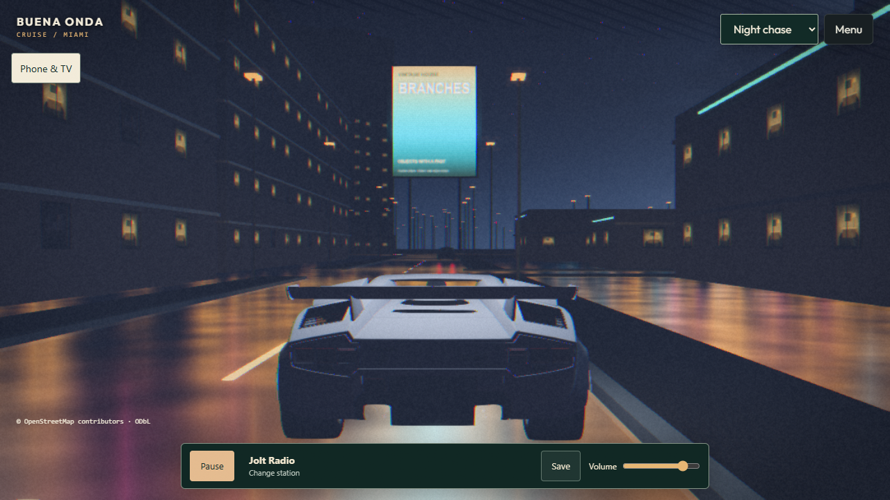
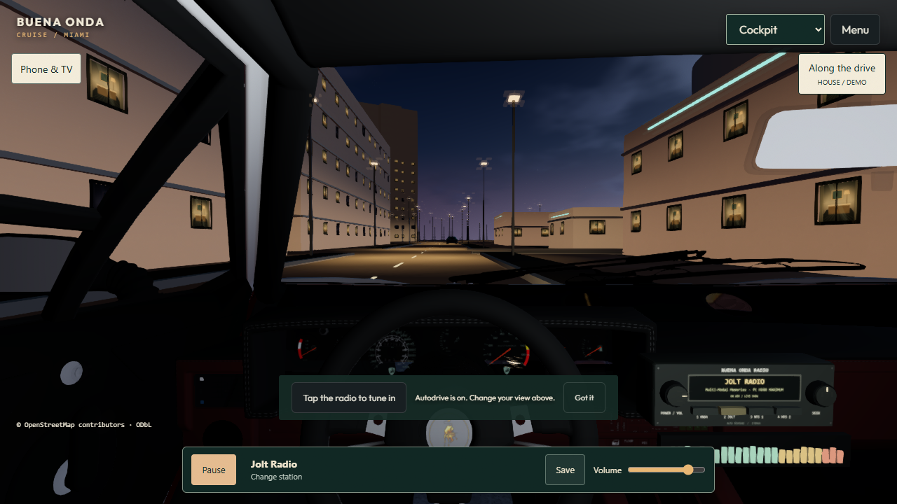
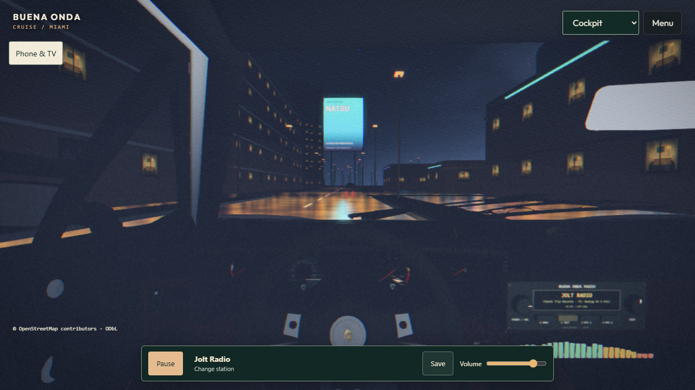
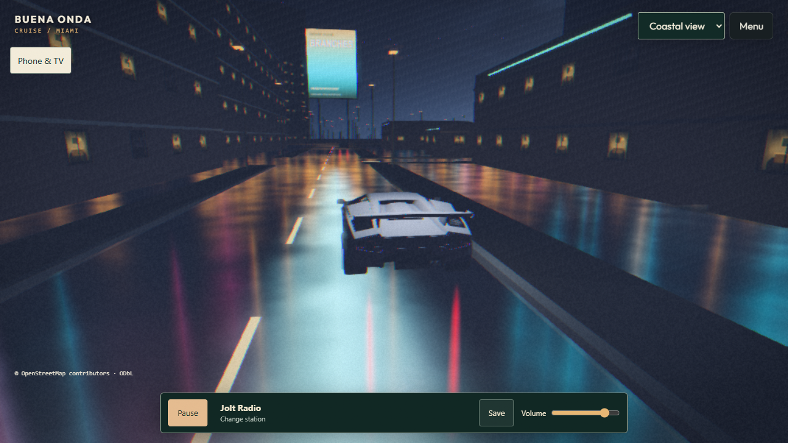
Desktop — Ocean Drive (114 m, handoff capture position)
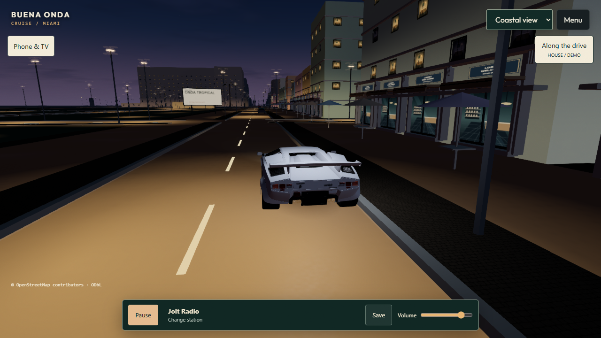
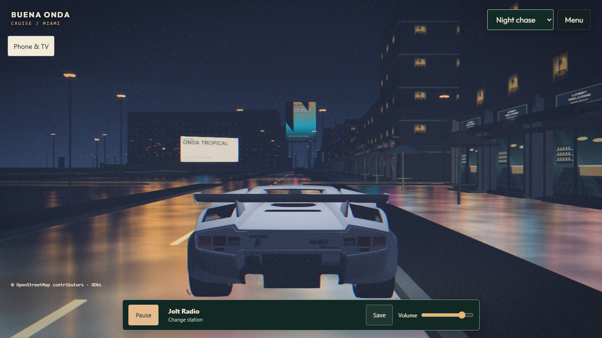
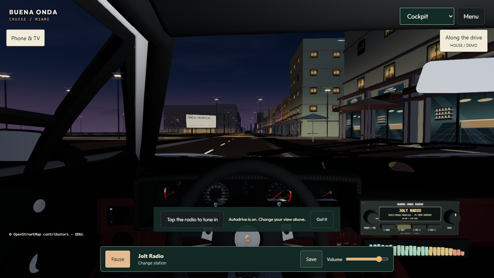
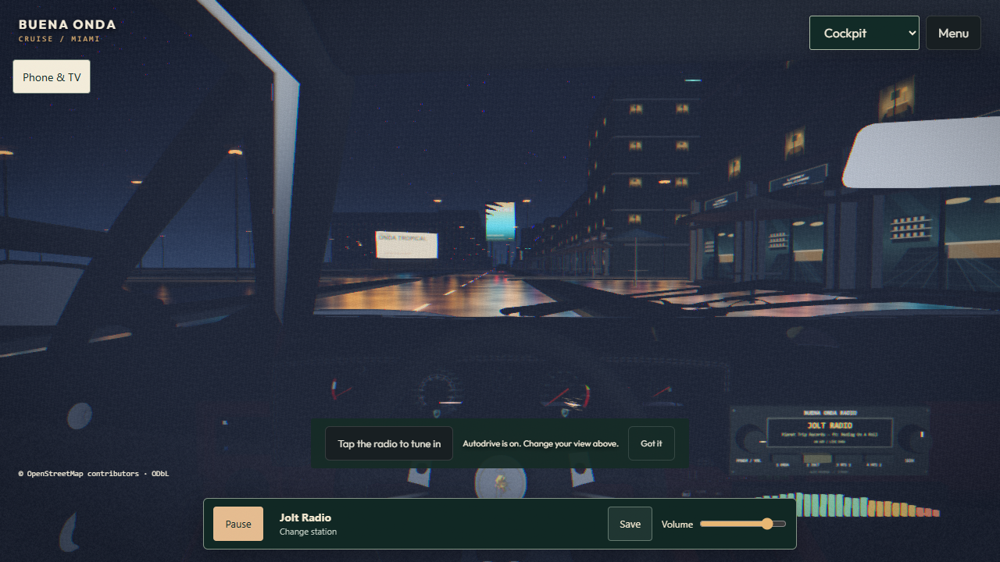
Phone emulation 390×844 — before / after
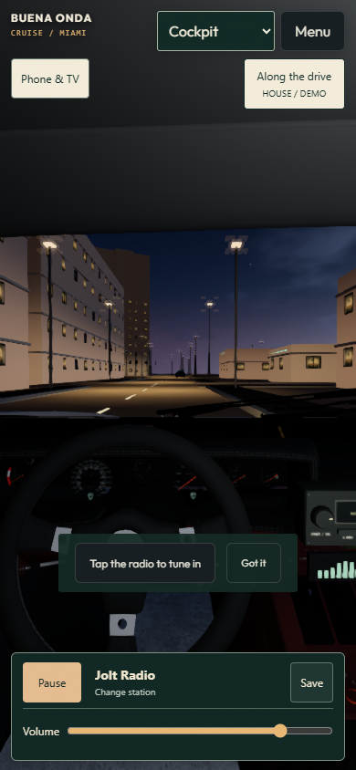
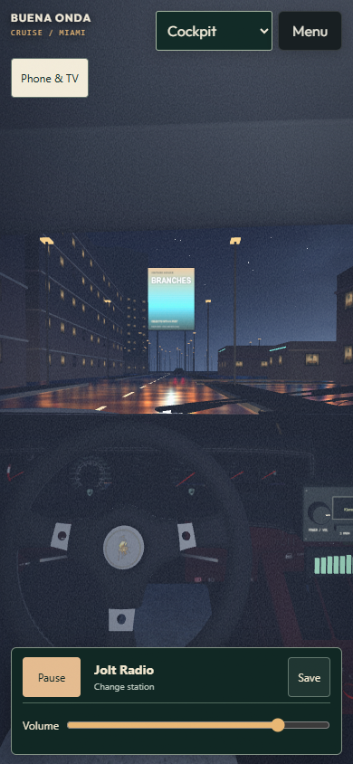
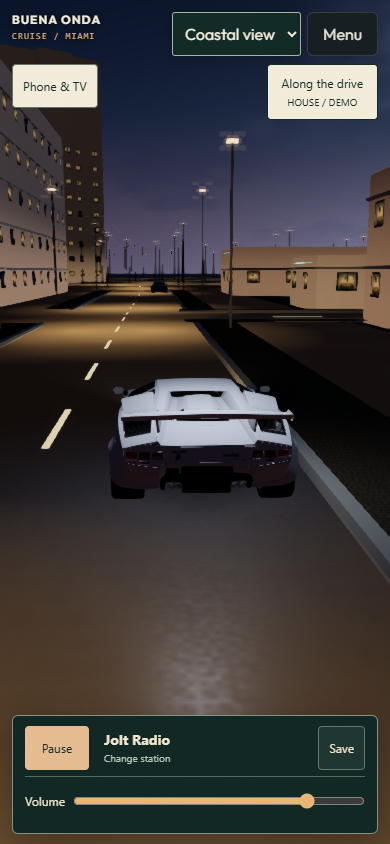
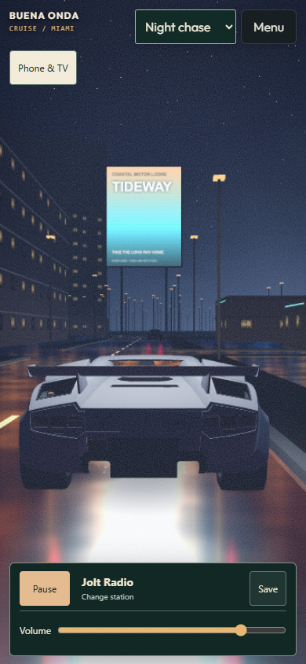
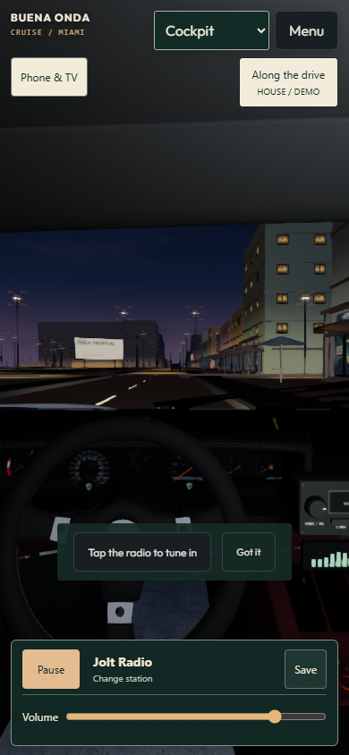
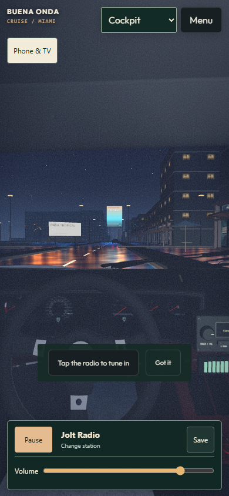
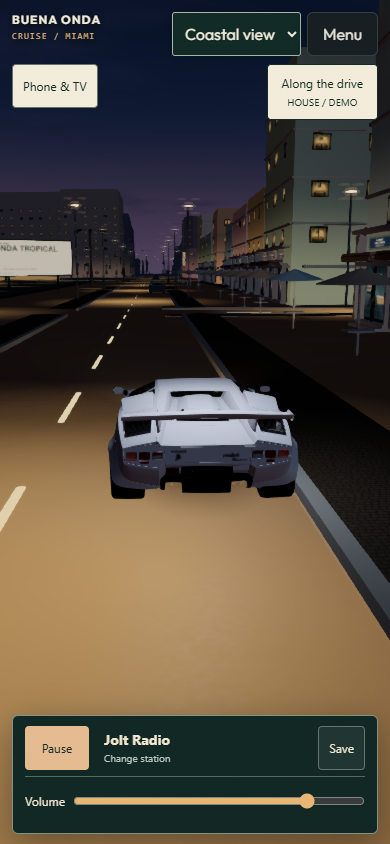
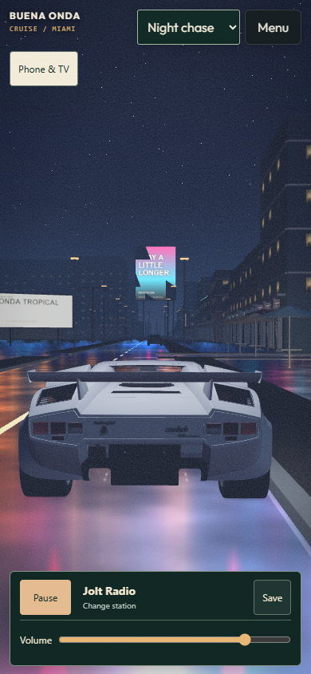